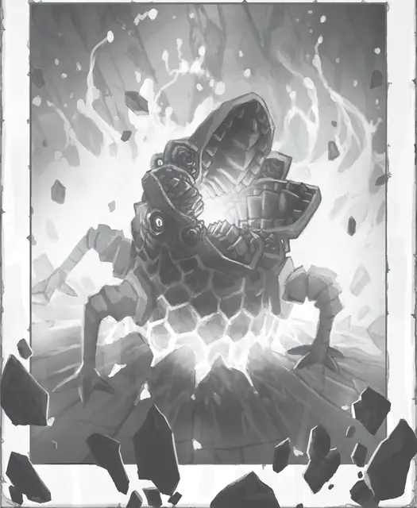

Харгра
Khargra
Маленький Элементаль, нейтральный

Класс Доспеха 20 (природный доспех)
Хиты 11 (2к6 + 4)
Скорость 5 футов, летая 30 футов
| мод | спас | ||
|---|---|---|---|
| СИЛ | 13 | +1 | +1 |
| ЛОВ | 10 | +0 | +0 |
| ТЕЛ | 14 | +2 | +2 |
| мод | спас | ||
|---|---|---|---|
| ИНТ | 5 | −3 | −3 |
| МДР | 11 | +0 | +0 |
| ХАР | 6 | −2 | −2 |
Навыки Восприятие +2, Скрытность +2
Чувства тёмное зрение 60 футов, пассивное Восприятие 12
Языки Терран
Опасность 1/8 (25 опыта)
Бонус мастерства +2
Особенности
Запах железа. Харгра может по запаху определить местонахождение железосодержащих металлов в пределах 30 футов.
Действия
Укус. . Рукопашная атака оружием: +3 к попаданию, досягаемость 5 фт., одна цель. Попадание: 3 (1к4 + 1) колющего урона. Если цель носит металлический доспех или несёт металлический щит, харгра прикрепляется к этому доспеху или щиту. Пока она прикреплена таким образом, харгра не может атаковать. Вместо этого, в начале каждого её хода бросайте 1к20. При результате "10" и выше доспех или щит получает постоянный накопительный штраф −1 КД. Доспех, чей КД падает до 10 или щит, чей КД падает до 0, уничтожаются.
Харгра может открепиться, потратив 5 футов передвижения. Любое существо (включая цель) может открепить её действием.
Фазирование земли. До конца своего следующего хода харгра может летать сквозь немагическую землю и камень. При этом она не беспокоит материал, через который перемещается. Она может завершить свое перемещение внутри земли или камня. Если харгра остаётся в них, когда эффект этой способности прекращается, она получает 14 (4к6) урона силовым полем и немедленно выталкивается в ближайшее свободное пространство.
Реакции
Приспособленческий голод. Когда существо, которое харгра видит в пределах 5 футов, попадает по ней металлическим оружием, харгра может совершить по этому существу атаку Укусом.
Описание
Причудливая харгра — летающее существо со Стихийного плана Земли, пожирающее любые металлы, с которыми сталкивается. Хотя обычно это существо питается рудными жилами, очищенные и обработанные металлы для него особенно привлекательны.
Приставучие мусорщики. Харгры родом со Стихийного плана Земли, где их считают раздражающими вредителями. Они попадают на Материальный план случайно, обычно следуя за земляным элементалем или другим существом, которого было призвали на Материальный план.
Харгры могут есть и переваривать большинство металлов, но предпочитают железо, медь и олово. Они считают золото мягким и приторным, похожим на кашу без запаха. Хотя харгры легко переваривают металлы, органика и самоцветы для них несъедобны. Если харгра съедает их по какой-либо причине, то они остаются в глотке на нескольких дней, а сама харгра страдает от несварения, пока не выкашляет беспокоящий её материал.
Хищники поневоле. Харгры находят живую плоть отвратительной на вкус, и нападают на существ только тогда, когда им движет голод и отсутствие более безопасных вариантов. Откусив кусок вкусного очищенного металла, который несет их жертва, они быстро убегают — и они скорее убегут, чем будут рисковать жизнью.
Скрытные курьеры. Некоторые кланы гномов, двергаров и эйзеров обучали харгр в качестве курьеров. Пользуясь необычными пищеварительными системами этих существ, их хозяева посыпают железной пылью свиток или другой органический предмет с посланием. Харгра пожирает послание, переваривая пыль, но оставляя послание в пищеварительном тракте. Долгие годы обучения и многочисленные угощения позволяют харгре запоминать, направление к различным подземным твердыням и форпостам. Харгра-курьер несет послание до пункта назначения, а затем выкашливает его по команде.